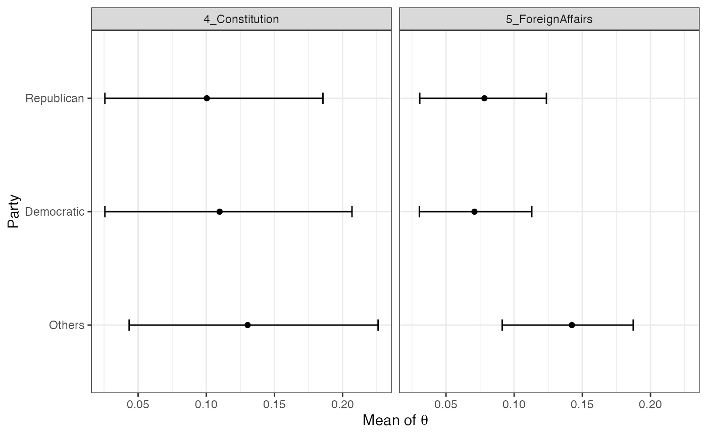

Scholars often have meta information about documents (e.g., authorship). The keyATM provides a way to incorporate covariate for document-topic distribution, using a Dirichlet-Multinomial regression (Mimno and McCallum 2008). Section 3 of Eshima et al. (2023) explains the covariate keyATM in details.
Preparing covariates
We follow the same procedure for the text preparation explained in Preparation and explain how to prepare covariates in this section.
The docvars() function in the quanteda
package is especially useful to construct a vector or a
dataframe of covariates because it ensures that documents
and covariates are corresponding to each other. Since the
keyATM does not take missing values, we recommend
researchers to remove any missing values from covariates before
extracting them using the docvars().
Moreover, we strongly recommend researchers to extract covariates after preprocessing texts because preprocessing steps will remove documents without any terms, which may result in any discrepancies between documents and covariates.
Therefore, the recommended procedure is (1) removing missing values
from covariates, (2) preprocessing texts (including the process to
discard documents that do not contain any words), and (3) extracting
covariates using docvars() function.
In this example, we create a period dummy and a party dummy from the
corpus and use them as covariates for the covariate keyATM. First, we
extract covariates attached to each document in the corpus with the
docvars() function.
## Year President FirstName Party
## 1 1789 Washington George none
## 2 1793 Washington George none
## 3 1797 Adams John Federalist
## 4 1801 Jefferson Thomas Democratic-Republican
## 5 1805 Jefferson Thomas Democratic-Republican
## 6 1809 Madison James Democratic-RepublicanThere are six unique parties and 58 unique years. We categorize them and create a new set of covariates. First, we divide years into two period, before and after 1900. Then, we categorize parties into Democratic, Republican, and Others.
library(dplyr)
vars %>%
as_tibble() %>%
mutate(Period = case_when(Year <= 1899 ~ "18_19c",
TRUE ~ "20_21c")) %>%
mutate(Party = case_when(Party == "Democratic" ~ "Democratic",
Party == "Republican" ~ "Republican",
TRUE ~ "Other")) %>%
select(Party, Period) -> vars_selected
table(vars_selected)## Period
## Party 18_19c 20_21c
## Democratic 7 14
## Other 13 0
## Republican 8 16Since we have categorical variables, we set baselines with the
factor() function.
vars_selected %>%
mutate(Party = factor(Party,
levels = c("Other", "Republican", "Democratic")),
Period = factor(Period,
levels = c("18_19c", "20_21c"))) -> vars_selectedThe keyATM internally uses the
model.matrix() function so that researchers can pass a
formula to model covariates (for more detailed information, refer to formula). For example,
in this example, we have a following matrix.
head(model.matrix(~ Party + Period, data = vars_selected))## (Intercept) PartyRepublican PartyDemocratic Period20_21c
## 1 1 0 0 0
## 2 1 0 0 0
## 3 1 0 0 0
## 4 1 0 0 0
## 5 1 0 0 0
## 6 1 0 0 0Fitting the model
We fit the model with the keyATM() function, passing
covariates data and the formula with the model_settings
argument. The text data is the same as what we use in the base model. Please check this page for available options.
out <- keyATM(
docs = keyATM_docs,
no_keyword_topics = 5,
keywords = keywords,
model = "covariates",
model_settings = list(covariates_data = vars_selected,
covariates_formula = ~ Party + Period),
options = list(seed = 250)
)Once you fit the model, you can save the model with
save() for replication. This is the same as the base model.
You can resume the iteration by specifying
the resume argument.
keyATM automatically standardizes non-factor
covariates. The standardize option in
model_settings argument of the keyATM()
function now takes one of "all", "none", or
"non-factor" (default). "all" standardizes all
covariates (except the intercept), "none" does not
standardize any covariates, and "non-factor" standardizes
non-factor covariates.
Interpreting results
We can use the top_words(), top_docs(),
plot_modelfit(), and plot_pi() functions as in
the base keyATM. The plot_alpha() is not defined for the
covariate keyATM because we use covariates to model the prior for the
document-topic distribution and \(\alpha\) does not explicitly appear in the
model.
Getting covariates from the output object
First, we use the output from the previous section and check the covariates used in the model. Note that covariates are standardized by default (i.e., each covariates to have zero mean and a standard deviation one).
This transformation does not change the substantive results as it is
a linear transformation. Researchers can use raw values with
standardize = FALSE in the model_settings
argument.
Researchers can glance covariate information with the
covariates_info() and the covariates_get()
function will return covariates used in the fitted output.
covariates_info(out)## Colnames: (Intercept), PartyRepublican, PartyDemocratic, Period20_21c
## Standardization: non-factor
## Formula: ~ Party + Period
##
## Preview:
## (Intercept) PartyRepublican PartyDemocratic Period20_21c
## 1 1 0 0 0
## 2 1 0 0 0
## 3 1 0 0 0
## 4 1 0 0 0
## 5 1 0 0 0
## 6 1 0 0 0
used_covariates <- covariates_get(out)
head(used_covariates)## (Intercept) PartyRepublican PartyDemocratic Period20_21c
## 1 1 0 0 0
## 2 1 0 0 0
## 3 1 0 0 0
## 4 1 0 0 0
## 5 1 0 0 0
## 6 1 0 0 0Covariates and document-topic distributions
The covariate keyATM can characterize the relations between covariates and document-topic distributions. We can obtain the marginal posterior mean of document-topic distribution conditioned on the covariates.
Suppose that we want to know document-topic distributions for each
period. We use a binary variable Period20_21c, which
indicates the period for this purpose.
The by_strata_DocTopic() function can display the
marginal posterior means of document-topic distributions for each value
of (discrete) covariates.
In the by_strata_DocTopic() function, we specify the
variable we focus on in by_var argument and label each
value in the variable (ascending order).
In this case, the Period20_21c equals zero indicates
speeches in the 18th and 19th century and equals one for the speeches in
the 20th and 21st century.
strata_topic <- by_strata_DocTopic(
out, by_var = "Period20_21c",
labels = c("18_19c", "20_21c")
)We can visualize results with the plot() function. The
figure shows the marginal posterior means of document-topic
distributions and the 90% credible intervals of them for each value of
covariates.
The figure indicates that both topics are more likely to appear in the 18th and 19th century.

The figure can be saved with the save_fig()
function.
save_fig(fig_doctopic, "figures/doctopic.pdf", width = 7, height = 3.5)We can visualize results by covariate with by =
"covariate" argument. The plot below combines two panels in the
previous plot and display in the same panel.
Using the output of the keyATM, we can calculate 90%
credible intervals of the differences in the mean of document-topic
distribution.
Since we set the 18th and 19th century dummy as the baseline when
constructing factor for this variable, the comparison is
the relative increase or decrease from the 18th and 19th century to the
20th and 21st century.
theta1 <- strata_topic$theta[[1]] # 18_19c
theta2 <- strata_topic$theta[[2]] # 20_21c
theta_diff <- theta1[, c(4, 5)] - theta2[, c(4, 5)] # focus on two topics
theta_diff_quantile <- apply(theta_diff, 2, quantile, c(0.05, 0.5, 0.95))
theta_diff_quantile## 4_Constitution 5_ForeignAffairs
## 5% 0.0906182 0.06250426
## 50% 0.1153357 0.08576355
## 95% 0.1424101 0.11659573Furthermore, we can use the predict() function to get
the predicted mean of the document-topic distribution for three party
categories.
strata_rep <- by_strata_DocTopic(
out, by_var = "PartyRepublican",
labels = c("Non-Republican", "Republican")
)
strata_dem <- by_strata_DocTopic(
out, by_var = "PartyDemocratic",
labels = c("Non-Democratic", "Democratic")
)
est_rep <- summary(strata_rep)[["Republican"]] # Republican data
est_dem <- summary(strata_dem)[["Democratic"]] # Democratic dataNow we are missing the baseline (Others).
new_data <- covariates_get(out)
# Setting both Republican and Democratic dummy to 0 means `Others`
new_data[, "PartyRepublican"] <- 0
new_data[, "PartyDemocratic"] <- 0
pred <- predict(out, new_data, label = "Others")Now, we combine three objects and make a plot.
res <- bind_rows(est_rep, est_dem, pred) %>%
filter(TopicID %in% c(4, 5)) # Select two topics
labels <- unique(res$label)
library(ggplot2)
ggplot(res, aes(x = label, ymin = Lower, ymax = Upper, group = Topic)) +
geom_errorbar(width = 0.1) +
coord_flip() +
facet_wrap(~Topic) +
geom_point(aes(x = label, y = Point)) +
scale_x_discrete(limits = rev(labels)) +
xlab("Party") +
ylab(expression(paste("Mean of ", theta))) +
theme_bw()
Covariates and topic-word distribution
Although the covariate keyATM does not directly model topic-word
distributions, the model can examine how topic-word distributions change
across different values of document-level covariates. For this analysis,
we need to use the keep argument in the
keyATM() function to store Z and
S. Then we pass the output with these stored values to the
by_strata_TopicWord() function. The example below
demonstrates top words associated to each topic for speeches from
different parties using the Party covariate.
out <- keyATM(
docs = keyATM_docs,
no_keyword_topics = 5,
keywords = keywords,
model = "covariates",
model_settings = list(covariates_data = vars_selected,
covariates_formula = ~ Party + Period),
options = list(seed = 250),
keep = c("Z", "S")
)
strata_tw <- by_strata_TopicWord(
out, keyATM_docs,
by = as.vector(vars_selected$Party)
)We check the result.
top_words(strata_tw, n = 3)## $Other
## 1_Government 2_Congress 3_Peace 4_Constitution 5_ForeignAffairs
## 1 people congress [✓] world [✓] states government
## 2 one justice freedom [✓] constitution [✓] union
## 3 fellow means let people powers
## Other_1 Other_2 Other_3 Other_4 Other_5
## 1 great made public nation power
## 2 united peace [3] country first free
## 3 every national nations men might
##
## $Democratic
## 1_Government 2_Congress 3_Peace 4_Constitution 5_ForeignAffairs Other_1
## 1 people government world [✓] states government great
## 2 now service new people union every
## 3 american justice let constitution [✓] foreign [✓] united
## Other_2 Other_3 Other_4 Other_5
## 1 national public nation power
## 2 made country men free
## 3 right confidence spirit never
##
## $Republican
## 1_Government 2_Congress 3_Peace 4_Constitution 5_ForeignAffairs Other_1
## 1 people congress [✓] world [✓] states government great
## 2 now government new constitution [✓] union united
## 3 one justice america people war [✓] every
## Other_2 Other_3 Other_4 Other_5
## 1 made country nation power
## 2 national public men free
## 3 right political country neverkeyATM Covariate with Pólya-Gamma Augmentation
An alternative modeling approach is to use the Pólya-Gamma augmentation for topic assignments. This approach has a speed advantage (computational time does not significantly change by the number of covariates), but estimated topics can be sensitive to the order. Please read technical details before use this option.
To estimate keyATM Covariate with the Pólya-Gamma augmentation, set
covariates_model = "PG".
out <- keyATM(
docs = keyATM_docs,
no_keyword_topics = 5,
keywords = keywords,
model = "covariates",
model_settings = list(covariates_data = vars_selected,
covariates_formula = ~ Party + Period,
covariates_model = "PG"),
options = list(seed = 250)
)
top_words(out)## 1_Government 2_Congress 3_Peace 4_Constitution 5_ForeignAffairs
## 1 states power world [✓] government country
## 2 public every peace [✓] constitution [✓] duty
## 3 great interests freedom [✓] one state
## 4 union principles nations rights [✓] foreign [✓]
## 5 laws [✓] citizens men much powers
## 6 law [✓] spirit life part policy
## 7 made confidence free within whole
## 8 best party [✓] know administration institutions
## 9 executive [✓] time history system general
## 10 duties nation human support proper
## Other_1 Other_2 Other_3 Other_4 Other_5
## 1 justice people people new now
## 2 progress country war [5] nation american
## 3 action make national america never
## 4 business citizens right let good
## 5 given long united time purpose
## 6 toward president less work yet
## 7 also still far great power
## 8 use always force today believe
## 9 whether place equal every among
## 10 success find give god changeReference
- Eshima, S., Imai, K., & Sasaki, T. (2023). “Keyword Assisted Topic Models.” American Journal of Political Science.
- Mimno D. McCallum A. (2008). “Topic models conditioned on arbitrary features with Dirichlet-Multinomial regression.” In Proceedings of the 24th Conference on Uncertainty in Artificial Intelligence, pp. 411–418.